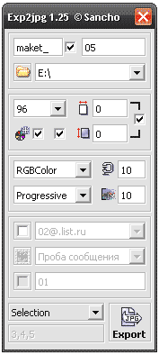

Export To JPG (SanM_ExportToJPG)
Sancho / 07.07.2008, 23:20/00:41
Форум:
Макрос для быстрого и удобного экспорта в *.jpg, как выделенного, так и всех страниц за раз. Также есть возможность автоматической генерации письма в TheBat с прикреплённым макетом(ми).

Узнать подробнее можно тут
Спасибо...
Есть такой макрос, написан не мной
Private Sub MultiPage_Click()
Dim ss5 As Shape
Dim opt As New StructSaveAsOptions
Dim fso, MyFile, n, v, m, d
Dim CreatePage As Page
Dim Doc As Document
Dim x As Double, y As Double, w As Double, h As Double
ActiveDocument.Unit = cdrMillimeter
With opt
.EmbedVBAProject = False
.Filter = cdrCDR
.IncludeCMXData = False
.Range = cdrSelection
.EmbedICCProfile = False
.ThumbnailSize = cdr10KColorThumbnail
.Version = cdrCurrentVersion
End With
Set fso = CreateObject("Scripting.FileSystemObject")
v = ActiveSelection.Shapes.Count
n = 1
m = n & ".cdr"
If ActiveSelection.Shapes.Count = 0 Then
MsgBox "Ничего не выделено", vbInformation, "Ошибка"
End
End If
For Each ss5 In ActiveSelection.Shapes
ss5.CreateSelection
ActiveDocument.SaveAs "c:\1_" & n & ".cdr", opt
n = n + 1
Next ss5
Set Doc = CreateDocument()
Set CreatePage = ActiveDocument.InsertPages(v - 1, False, ActivePage.Index)
For d = 1 To v
ActiveDocument.Pages(d).Activate
ActiveLayer.Import "c:\1_" & d & ".cdr"
Set MyFile = fso.GetFile("c:\1_" & d & ".cdr")
MyFile.Delete
ActiveSelection.GetBoundingBox x, y, w, h, True
ActivePage.SetSize w, h
ActiveSelection.GetBoundingBox x, y, w, h, True
ActiveSelection.Move -x, -y
Next d
End Sub
А чем exp2gpg лучше стандартного File Converter?
А надо ли оно? Лучше наверное сначала посмотреть то, что отправляешь.
Макрос - просто "супер-хит"!!!!
создание превьюшек из муры и рутины превратилось в нажатие одной кнопки!
респект Санчосу! в Ваших макросах прям чувствуется, что писались дизайнером, а не програмистом.
как говорят
гомосексуалисты"дизайнер точно знает чего хочет другой дизайнер" ))))Крутой макрос, скажите а каким образом можно былоб сделать так чтобы макрос считывал названия страниц в многостраничном документе и сохранял файлы именно под этими названиями, а не 1,2,3 итд...? Буду очень благодарна за эту модификацию!
Друзья, бьюсь огромное количество времени.
Проблема - в Корел 12 нарисовал фон, используя "фонтанную" заливку- коническую (Fountain fill-Conical)
При переводе для печати в JPG, TIFF и некот. другие – один и тот же результат – на фото после печати появляются полосы-лучи – видимо, границы разделения цветов.
Пробовал перевести, например, в Фотошоповский файл – там те же полосы. Пробовал перевести в самом Кореле в ростр – тот же эффект.
Подскажите, пожалуйста, как в печати (не имея кореловских принтеров, может есть такие?!) получить фото (картинку) без этих лучей. Заранее благодарен. Александр
aleksandr11, а можно увидеть файл? возможно некорректно построенный градиент, соотношение цветов и шагов...
Добрый день, огромное вам спасибо за соучастие в моей проблеме.
Я попробовал загрузить оригинальный файл (он 12 кб), но расширение cdr. не прикрепляется на этом форуме.
Подскажите, пожалуйста, как мне лучше поступить - может я могу вам выслать этот файл по имейл?
Честно скажу, я просто умучился с тем, что при печати (самой разной и массовой и студийной)- одни и те же лучи, и до меня долго доходило, что дело не в технике, а в файле. К сожалению мои познания и опыт не находят выход из этой ситуации... Еще раз спасибо вам за помощь.
Александр
aleksandr11,
1. ну да cdr "не прикрепляется" )))
2. Правила портала почитайте, особенно на счёт дублирования сообщения/тем.
Страницы